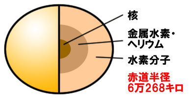
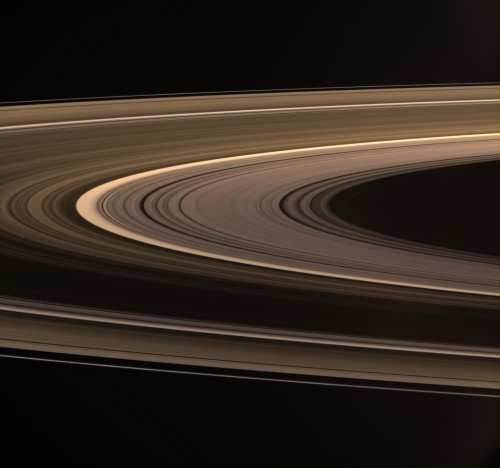

土星の特徴
土星は木星型惑星と呼ばれる、ガスの惑星。太陽系では木星の次に大きい惑星で、地球の9倍もある。ですが、土星の平均密度は水の0.7倍なので土星を浮かべられるほど大きなプールがあったとしたら、土星は 水に浮いてしまう。
土星の大気は水素96％、ヘリウム3％、メタン0.0045％、アンモニア0.0001％となっています。木星に似ている。
巨大な環
円盤のように見える土星の環は、たくさんの細い環が集まったものである。最初に発見したのは、ガリレオ・ガリレイですが、彼は環とは認識できなかった。正しい形が明らかにされたのは1655年、オランダの天文学者クリスチャン・ホイヘンスによってでした。その環は、岩石や氷のつぶの集まり。粒の大きさは数mmから数m。表面は水やアンモニアの氷で覆われている。
1675年にはフランスの天文学者ジョバンニ・カッシーニが、土星の環は複数の細い環からできていて、隙間が開いている部分があることを発見した。最も幅が広い隙間は「カッシーニの間隙」と呼ばれている。
土星の環がどのようにしてできたのかは明らかになっていませんが、土星の衛星や捕獲した彗星などが土星に近づきすぎて、潮汐力によってこなごなになったものと考えられている。「スポーク」と呼ばれる暗い模様が見られますが、なぜこのような模様が生じているのか、分かっていない。
消える環
土星の環は、地球の公転軌道面に対して約26度傾いている。そのため、土星の公転につれて、地球から見える環の傾きが変わる。そして、環はその厚さが最大でも数百mしかないため、真横から見ると地球からは見えなくなってしまう。環の消失は約15年ごとに起こる。